Explore every division, district and tourist destination of Bangladesh. Learn about history, culture, nature and travel guides in one place.
Bangladesh is a land of natural beauty, rich culture, and historical heritage. From the world's longest sea beach at Cox's Bazar to the lush tea gardens of Sylhet, every corner of the country has something unique to explore.
This website helps visitors discover all 8 divisions, 64 districts, and hundreds of tourist destinations with travel guides and useful information.
Explore Now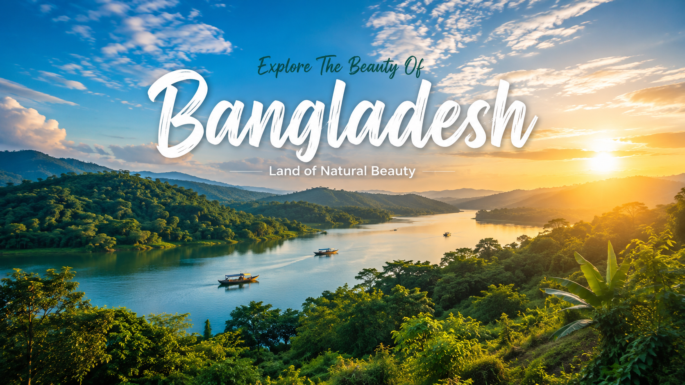
Discover Bangladesh through its divisions, districts, tourist attractions, and natural beauty.
Divisions
Districts
Tourist Places
Visitors Every Year
Quickly find your favorite tourist place, district, or division across Bangladesh.
Click on any division to discover its districts, tourist attractions, history and travel guide.
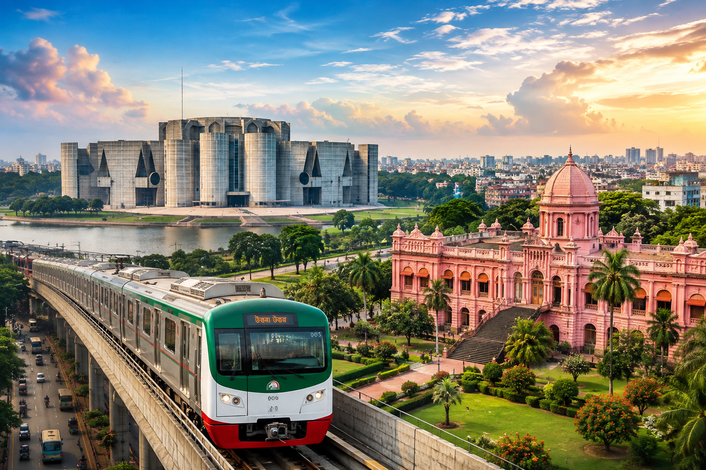
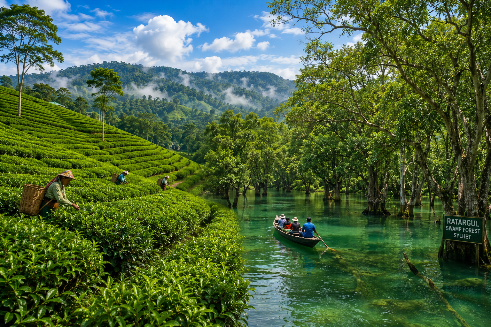
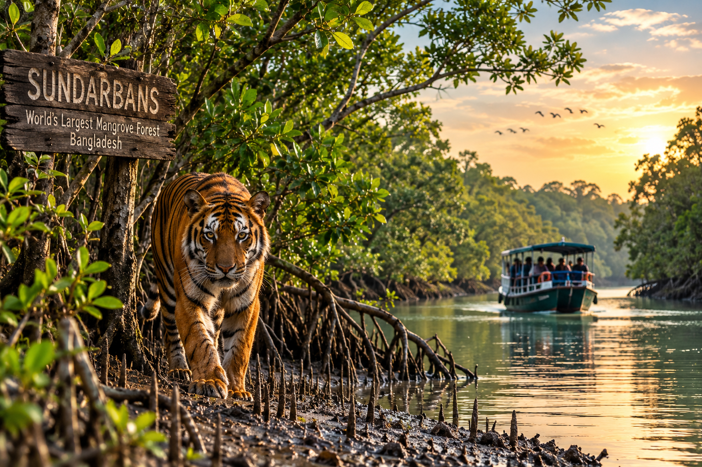
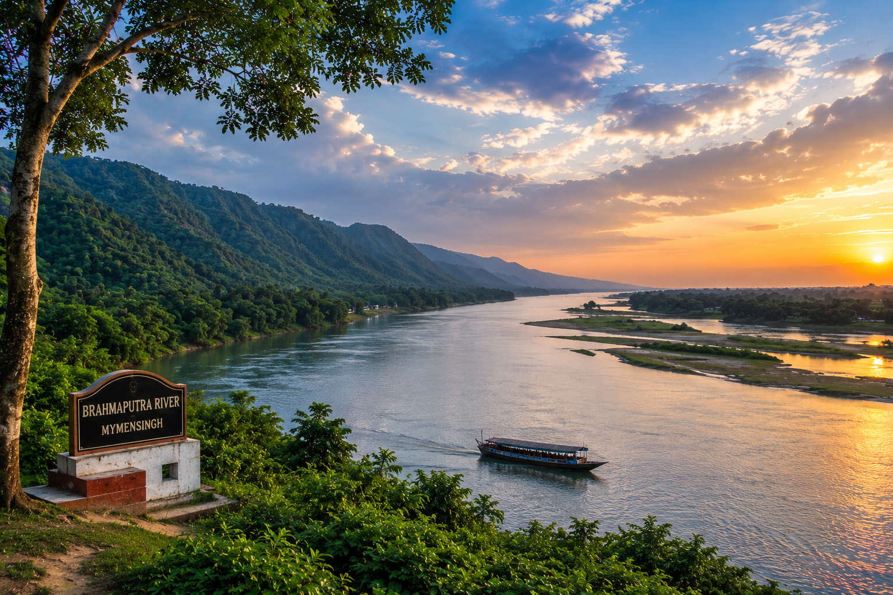
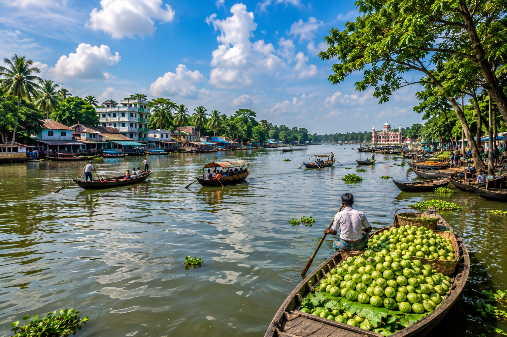
Explore some of the most beautiful tourist destinations in Bangladesh.
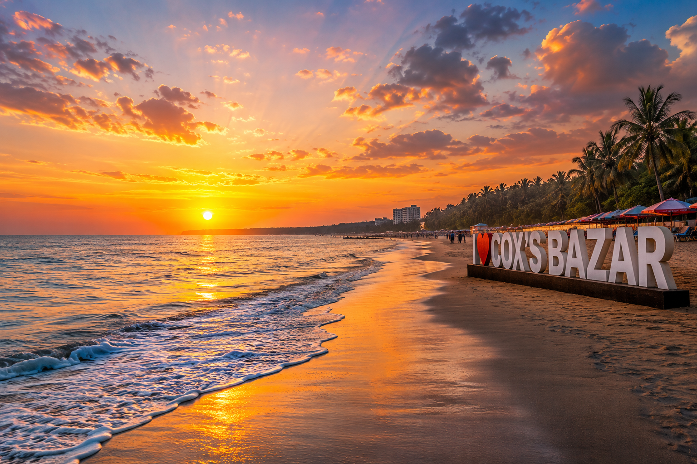
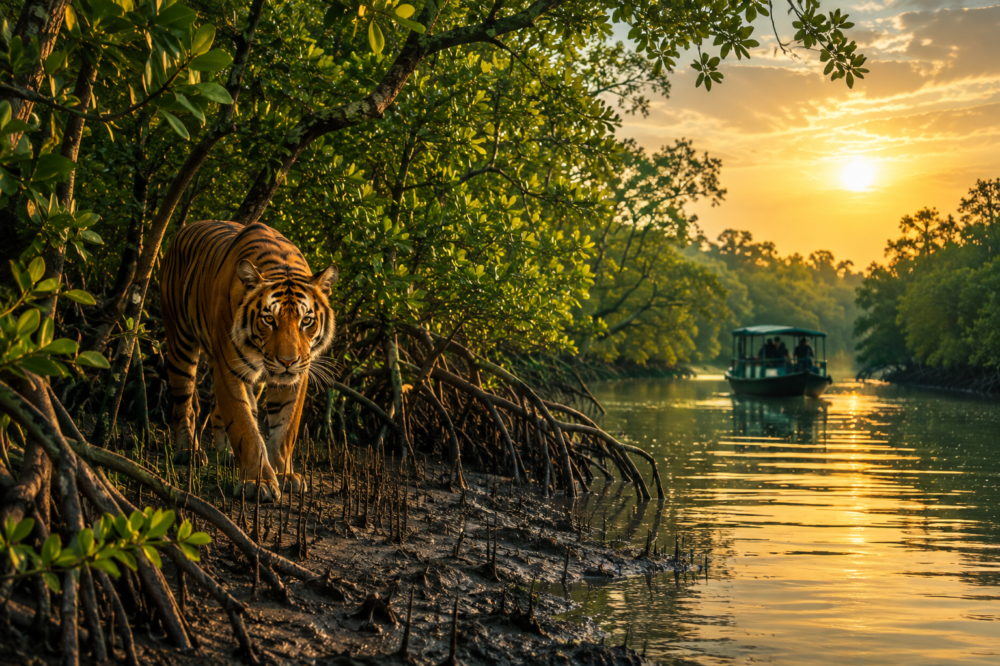
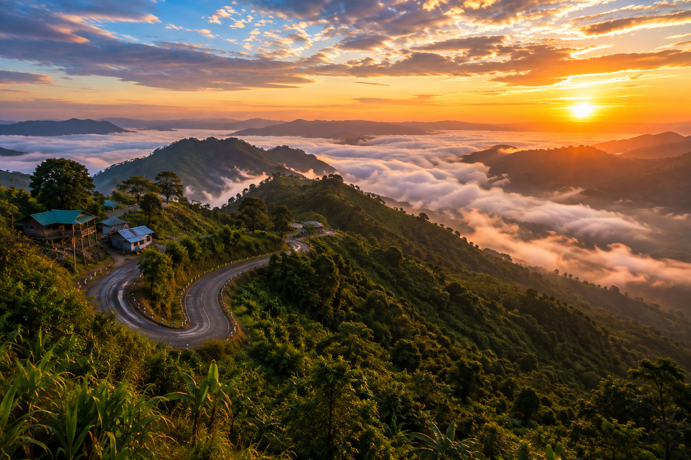
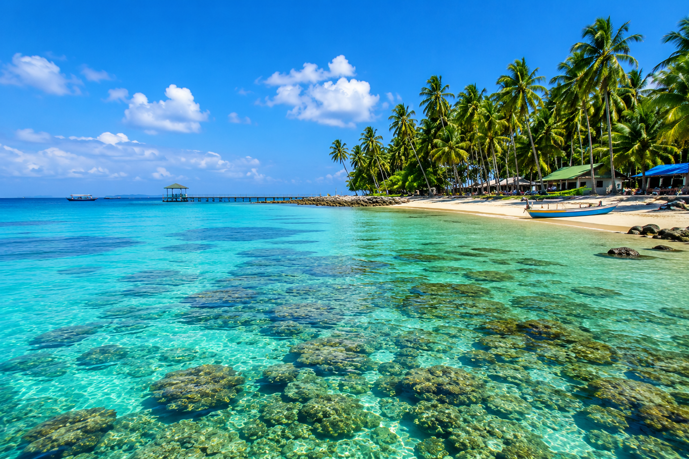
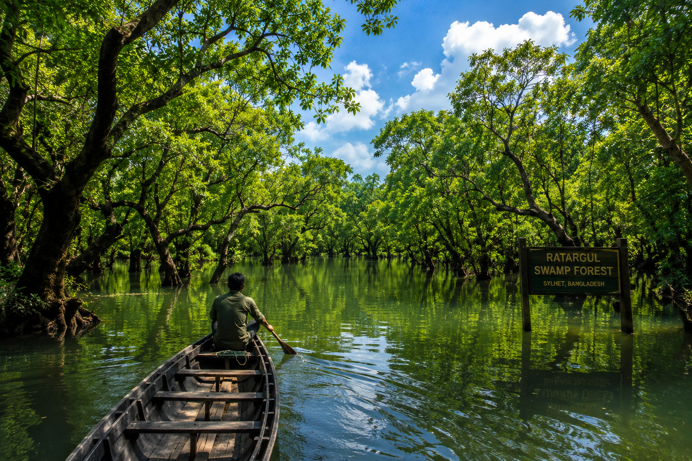